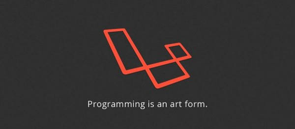
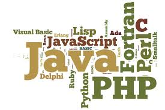

| Ce este un limbaj de programare?
|
 | |||||
| 1)După paradigma programării:
|
2)După nivelul de abstractizare (care printre altele corespunde cu ușurința cu care programele pot fi citite și înțelese de către programatori:
| 3)După vechime
| Cum functionează un limbaj de programare? |
 Pentru executarea unui program scris într-un limbaj oarecare, există, în principiu, două abordări: compilare sau interpretare. La compilare, compilatorul transformă programul-sursă în totalitatea sa într-un program echivalent scris în limbaj mașină, care apoi este executat. La interpretare, interpretorul ia prima instrucțiune din programul-sursă, o transformă în limbaj mașină și o execută; apoi trece la instrucțiunea doua și repetă aceleași acțiuni.
Unele limbaje se pretează bine la compilare; de exemplu limbajele clasice: Pascal, Fortran, C. Altele sunt cu predilecție interpretate, de ex. BASIC, PHP, SQL. Multe limbaje moderne combină compilarea cu interpretarea: codul sursă este compilat într-un limbaj binar numit bytecode, care la rulare este interpretat de către o mașină virtuală. De remarcat faptul că unele interpretoare de limbaje pot folosi compilatoare așa-numite just-in-time, care transformă codul în limbaj mașină chiar înaintea executării.
| | |